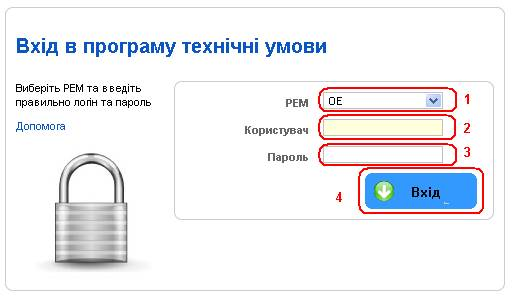
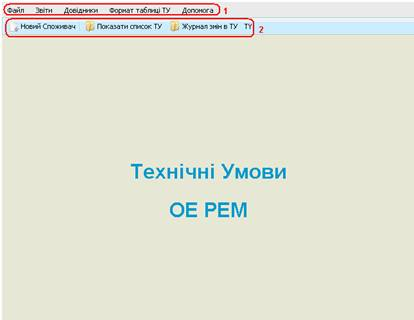
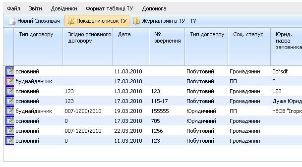
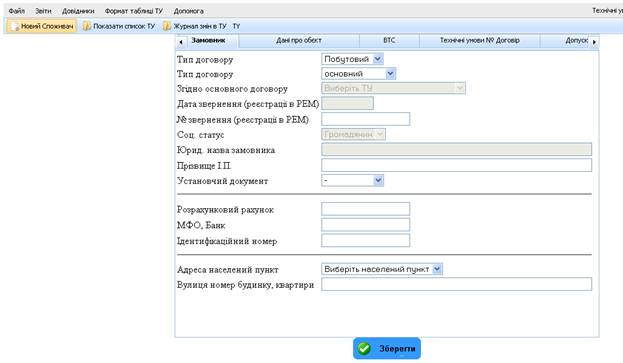
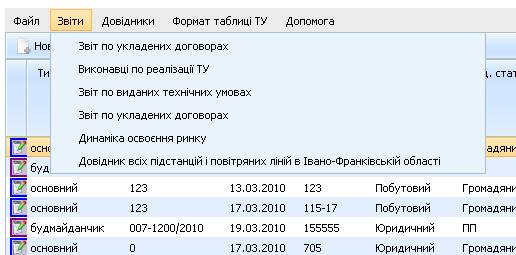
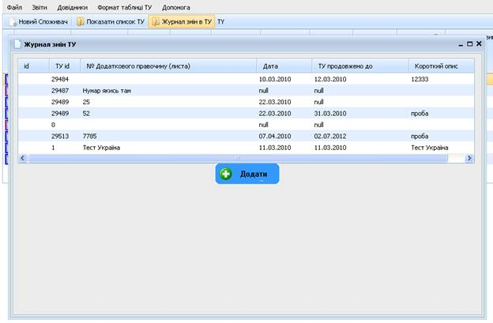

Допомога
Для входу в програму Технічні умови потрібно пройти авторизацію:

В програмі ведеться журналізація всіх дій, у зв’язку з цим нікому не давайте особистий пароль.
Авторизованому користувачу виводиться головне вікно пограми, яке складається з головного меню (1) і тул-бара (2) і має такі можливості:

Щоб вивести список ТУ натисніть кнопку «Показати список ТУ»
Список ТУ можна сортувати по любому полю (клікнувши в шапці таблиці по назві поля), та редагувати записи, клікнувши на олівець навпроти запису.

Щоб додати нові ТУ, натиснути кнопку «Новий споживач», у вікні що відкриється внести дані про Замовника, дані про об’єкт, ВТС, №Договіру, допуск, які згруповані повідповідних вкладках. Після внесення інформації, натиснути кнопку «Зберегти».

Звіти
Формування звітів відбувається через головне меню програми, шляхом вибору потрібного пункту:

Журнал змін в ТУ
Для виводу журналу, натисніть кнопку в тулбарі «Журнал змін в ТУ»
